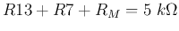
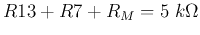

Solution:
Also find the over all resistance of the meter head assembly. This information is necessary for understanding the AC voltage and resistance measurement.
Solution:
The meter-head assembly excluding  is
.
is
.
As a current is needed for a full scale display, the corresponding voltage across the meter-head assembly is .
Solution:
Find the values of R1 through R6 for the 6 scales of DC voltage measurement
so that these resistors will indeed allow a full display with  at the marked DC voltage for each of the 6 position. Note that
is in series with
and the meter-head assembly with total
resistance
.
at the marked DC voltage for each of the 6 position. Note that
is in series with
and the meter-head assembly with total
resistance
.
Solution:
As shown in Figure 4, the circuit for each scale of the DC voltage measurement is a voltage divider with an internal resistance for the meter-head:
Based on the given values of R14 through R17 for AC voltage measurement
(Figure 5) find the total resistance  of the meter-head assembly
in series with the diode D1. Further, find the resistance and
voltage drop
of the meter-head assembly
in series with the diode D1. Further, find the resistance and
voltage drop  of the diode D1 when the meter-head has a full scale
display.
of the diode D1 when the meter-head has a full scale
display.
Find the values of R14 through R17 so that they will indeed allow the
meter-head to have a full scale display (with an average DC current of
 going through the meter-head), when the AC voltages of
10V, 50V, 250V and 1000V (RMS values) are applied to the corresponding
scale positions.
going through the meter-head), when the AC voltages of
10V, 50V, 250V and 1000V (RMS values) are applied to the corresponding
scale positions.
Solution:
Pick any two of the four scales, e.g., 10V and 50V, and get
As we know
, the resistance of D1 must be
. Correspondingly, at the full display with
 , the voltages across D1 is
. As , the total
voltage across the meter-head and D1 is
.
, the voltages across D1 is
. As , the total
voltage across the meter-head and D1 is
.
Any AC voltage to be measured needs to be rectified (half-wave) and then
converted to the average DC value. When the AC voltage is , its
peak value is
, the average DC value after
half-wave rectification is
The circuit shown in Figure 6 has some major mistake! Correct it.
Find the values of R12 and R11 so that the meter-head will have a full
scale display (with an current of  ), when the DC currents
of 2.5 mA and 25 mA are applied to the corresponding scale positions.
), when the DC currents
of 2.5 mA and 25 mA are applied to the corresponding scale positions.
Use the given values of R9=0.97 and R10=0.04 (not very
accurate!), find current  through the meter-head when the applied DC
current is 10 A. For this current to be exactly , what value
should R10 take?
through the meter-head when the applied DC
current is 10 A. For this current to be exactly , what value
should R10 take?
Solution:
The circuit for each scale of the DC current measurement is a current divider with an internal resistance for the meter-head:
Solution:
The resistance of the meter-head  in parallel with R26 is:
in parallel with R26 is:
The total resistance is
The total current through the battery is